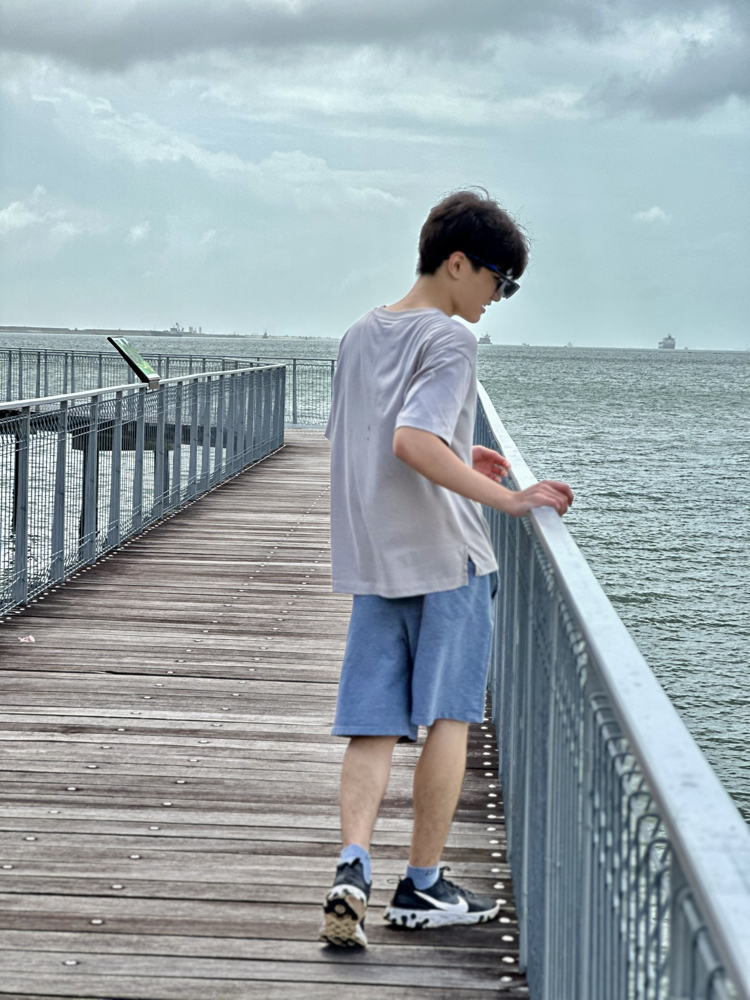

Hello there! I'm Chan Luo Feng!
Values
I believe in the importance of honesty, integrity, and empathy. with these values, i believe it can shape both my persoanl and professional relationship with everyone.

Interests
Since 2021, I have a strong passion for Cybersecurity and have been taking multiple online lessons in cybersecurity and am currently pursuing a certificate from TCM Security. I have been learning on how to set up my own home lab, firewalls, and my own private VPN .
Personality
I consider myself to be a person who is easy to interact with, although I tend to be more introverted around others. However, during my time at NTUC Income, I had the opportunity to display leadership skills as I was entrusted with leading my group. In addition to my leadership abilities, I have developed a strong foundation in troubleshooting as well as remote accessing to users.
Skills
Here are some skills I possess:

Python
C#

HTML